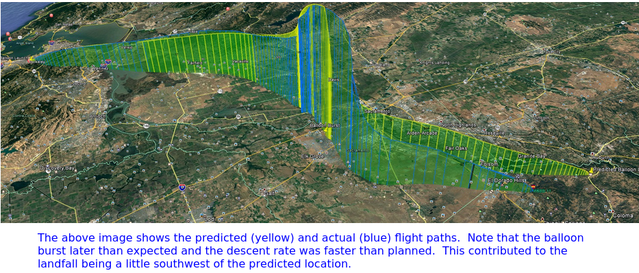
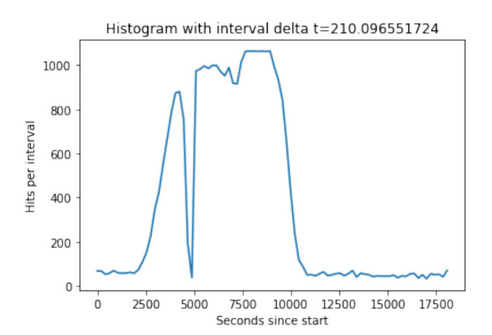
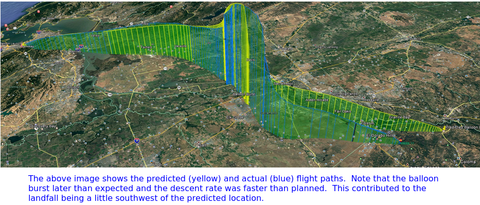
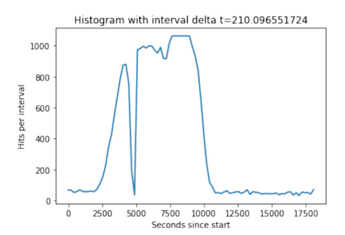

.png) Postscript - The Flight, Experiments and Follow Up: The ascent portion of the flight matched the predictions very closely. The last prediction was run for a 10 AM launch with the actual launch occurring closer to 10:30 AM. The balloon rose higher than predicted and took a brief period to pop. This could be explained by lack of precision in filling the balloon and manufacturing variances of the balloon. The actual descent was more than twice the rate predicted. In examining photos of the landed parachute it appears that the balloon remnants got tangled up where the parachute lines meet the flight line and reduced the diameter of the parachute. We will use more line on the balloon and/or use a balloon cutdown mechanism before the pop next time.

The cross band repeater was a huge success and an interesting DX opportunity on UHF/VHF. Next time it would be good to give hams in a 100 to 200 mile range some advanced notice, giving them a chance to make some interesting long-distance contacts.
The Geiger counter carried an SD card which recorded strikes and times. The GPS lost fix through most of the flight. The Geiger counter showed increasing radioactivity as it increased in altitude and stayed at nearly full scale for the duration of the flight. The radiation is due to cosmic rays emanating from space colliding with air molecules. A dip at highest portion of the flight was expected as the air density drops off. This may be observed at about 7,500 secs on the plot. The dropout at 5,000 sec was probably a breakdown in insulation and arcing in Geiger counter's high voltage section. Hot glue will fix that.

We developed a successful system for sampling high altitude bacteria. During flight, the system remained sterile by design, and the onboard software worked as intended. The plan was to briefly open up the module to collect a sample at about 60,000 feet. Unfortunately, a contingency we did not plan for was the GPS losing fix. Therefore, the module stayed locked during the entire flight. In future launches, we will use a barometric or generic altimeter instead of (or in conjunction with) a GPS. We will also record flight data to an onboard SD card for future analysis. This will ensure successful sampling and good controls. The loss of GPS fix was likely due to the close proximity between the UHF cross band repeater antenna and the GPS receive antennas. This can be fixed by placing the GPS antennas higher up the flightline and increasing separation.
So some things went perfectly, others not so much. But we can say unequivocally that it was a completely enjoyable experience for all who participated. Stay tuned for the next flight.
73, de W6DEI Eastbay Amateur Radio Club
Postscript - The Flight, Experiments and Follow Up: The ascent portion of the flight matched the predictions very closely. The last prediction was run for a 10 AM launch with the actual launch occurring closer to 10:30 AM. The balloon rose higher than predicted and took a brief period to pop. This could be explained by lack of precision in filling the balloon and manufacturing variances of the balloon. The actual descent was more than twice the rate predicted. In examining photos of the landed parachute it appears that the balloon remnants got tangled up where the parachute lines meet the flight line and reduced the diameter of the parachute. We will use more line on the balloon and/or use a balloon cutdown mechanism before the pop next time.

The cross band repeater was a huge success and an interesting DX opportunity on UHF/VHF. Next time it would be good to give hams in a 100 to 200 mile range some advanced notice, giving them a chance to make some interesting long-distance contacts.
The Geiger counter carried an SD card which recorded strikes and times. The GPS lost fix through most of the flight. The Geiger counter showed increasing radioactivity as it increased in altitude and stayed at nearly full scale for the duration of the flight. The radiation is due to cosmic rays emanating from space colliding with air molecules. A dip at highest portion of the flight was expected as the air density drops off. This may be observed at about 7,500 secs on the plot. The dropout at 5,000 sec was probably a breakdown in insulation and arcing in Geiger counter's high voltage section. Hot glue will fix that.

We developed a successful system for sampling high altitude bacteria. During flight, the system remained sterile by design, and the onboard software worked as intended. The plan was to briefly open up the module to collect a sample at about 60,000 feet. Unfortunately, a contingency we did not plan for was the GPS losing fix. Therefore, the module stayed locked during the entire flight. In future launches, we will use a barometric or generic altimeter instead of (or in conjunction with) a GPS. We will also record flight data to an onboard SD card for future analysis. This will ensure successful sampling and good controls. The loss of GPS fix was likely due to the close proximity between the UHF cross band repeater antenna and the GPS receive antennas. This can be fixed by placing the GPS antennas higher up the flightline and increasing separation.
So some things went perfectly, others not so much. But we can say unequivocally that it was a completely enjoyable experience for all who participated. Stay tuned for the next flight.
73, de W6DEI Eastbay Amateur Radio Club